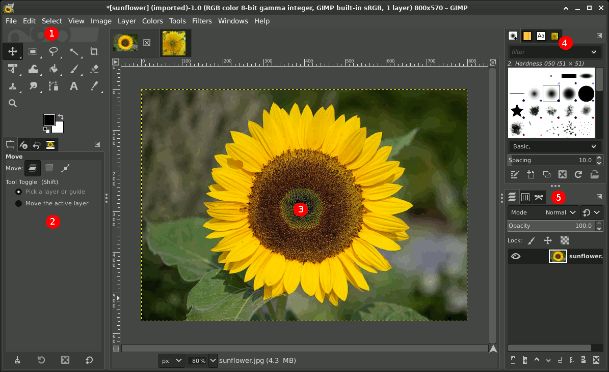
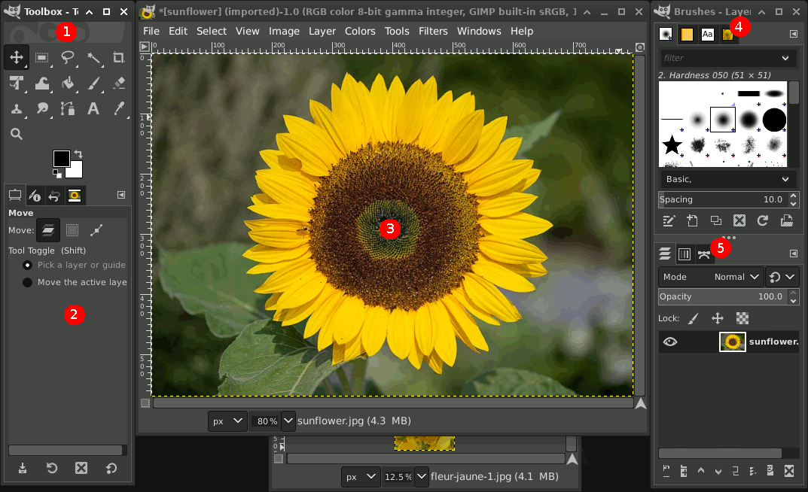

Однооконный режим

Инструменты, изображение и дополнительные панели находятся внутри одного общего окна программы.
Все элементы объединены в едином рабочем пространстве.
Изучаем устройство рабочего пространства графического редактора, назначение основных панелей и способы настройки интерфейса для удобной работы с изображениями.
Интерфейс программы объединяет инструменты, изображение и дополнительные панели.
GIMP — графический редактор, предназначенный для создания и обработки растровых изображений. Для работы с изображениями в нём используются инструменты, окна и специальные диалоговые панели.
Рабочее пространство — это область программы, в которой пользователь выбирает инструменты, открывает изображения, изменяет параметры и управляет элементами проекта.
Содержит значки инструментов для выделения, рисования, преобразования изображений и работы с текстом.
Позволяют изменять настройки выбранного инструмента: размер, непрозрачность, режим работы и другие свойства.
Отображает открытое изображение и область, в которой выполняется редактирование.
Предназначены для управления слоями, каналами, контурами, кистями и другими элементами проекта.
Основные элементы расположены вокруг рабочей области.
В типичном рабочем пространстве слева находится панель инструментов с настройками, в центре — изображение, а справа — дополнительные диалоговые панели.
Дополнительные диалоги
Содержит команды для открытия, сохранения и обработки изображений.
Позволяет выбирать инструменты для выполнения операций.
Содержат настройки текущего выбранного инструмента.
Предназначено для просмотра и редактирования изображения.
Обеспечивают управление различными элементами изображения.
Может отображать сведения о текущем изображении и масштабе просмотра.
Схема является условной: расположение и внешний вид отдельных элементов могут различаться в зависимости от версии GIMP и настроек рабочего пространства.
В GIMP можно по-разному организовать расположение рабочих окон.
Интерфейс GIMP поддерживает два основных режима отображения: однооконный и многоконный. В обоих режимах доступны основные инструменты и диалоговые панели, но они располагаются по-разному.

Инструменты, изображение и дополнительные панели находятся внутри одного общего окна программы.

Рабочая область, панель инструментов и дополнительные панели могут располагаться в отдельных окнах.
Удобно, когда все основные элементы должны находиться в пределах одного окна. Открытые изображения можно переключать с помощью вкладок.
Позволяет свободно размещать рабочие окна и панели на экране, например на нескольких мониторах.
В актуальной версии GIMP 3.2 однооконный режим используется по умолчанию. Выбранный режим можно изменить через меню «Окна» — «Однооконный режим».
Основной элемент управления графическими операциями.
Панель инструментов содержит значки, с помощью которых выбираются команды для работы с изображением. Каждый инструмент выполняет определённую задачу.
Позволяют выделять прямоугольные, эллиптические и произвольные области изображения.
Используются для нанесения линий, цветов, мазков кистью и удаления отдельных фрагментов.
Позволяют перемещать, масштабировать, вращать, наклонять и изменять перспективу объектов.
Предназначены для добавления надписей, выбора цветов и работы с цветовыми параметрами.
При наведении указателя на значок инструмента обычно появляется подсказка с его названием и кратким описанием. Многие инструменты также имеют собственные клавиши быстрого вызова.
Настройки меняются в зависимости от того, какой инструмент выбран.
Панель параметров инструмента содержит дополнительные настройки выбранной команды. Например, при выборе кисти появляются параметры размера и непрозрачности, а при выборе инструмента выделения — настройки выделяемой области.
Определяет ширину кисти или другие размеры инструмента.
Определяет степень видимости создаваемого элемента.
Позволяет выбирать используемый цвет переднего плана.
Определяет способ взаимодействия инструмента с изображением.
Позволяет выбрать форму и характер следа кисти.
Содержат параметры, характерные для выбранного инструмента.
Главное различие: панель инструментов отвечает за выбор команды, а панель параметров — за настройку её работы.
Панели помогают управлять отдельными элементами изображения и настройками программы.
В GIMP многие дополнительные окна называются диалогами. Их можно объединять в общие панели — доки. Внутри такой панели разные диалоги располагаются в виде отдельных вкладок.
Показывает структуру изображения и позволяет управлять отдельными составляющими композиции.
Позволяет просматривать и изменять цветовые каналы и альфа-канал изображения.
Предназначена для создания и редактирования векторных контуров.
Содержит наборы форм кистей, используемых инструментами рисования.
Содержит образцы узоров и цветовых переходов, используемых при заполнении областей.
Показывает последовательность операций, выполненных при редактировании изображения.
Показывает список открытых в программе изображений и позволяет переключаться между ними.
Отображает настройки текущего выбранного инструмента.
Не все диалоги должны быть открыты одновременно. Пользователь может добавлять и убирать вкладки, оставляя на экране только необходимые панели.
Рабочее пространство GIMP можно настраивать под конкретные задачи.
Дополнительные диалоги можно открывать, закрывать, перемещать и объединять в общие панели. Это позволяет организовать интерфейс так, чтобы нужные инструменты всегда находились под рукой.
Открытие диалога. Используй меню «Окна» → «Стыкуемые диалоги» (в некоторых локализациях — «Прикрепляемые диалоги»), чтобы выбрать нужную панель.
Добавление вкладки. Открой меню вкладки панели и выбери пункт «Добавить вкладку», затем укажи нужный диалог.
Перемещение вкладки. Перетащи вкладку в другую панель, чтобы изменить расположение диалогов.
Отделение диалога. Используй пункт «Отделить вкладку», чтобы вывести диалог в отдельное окно.
Закрытие панели. Для удаления ненужной вкладки открой её меню и выбери пункт «Закрыть вкладку».
Восстановление панели. Недавно закрытые панели можно повторно открыть через меню «Окна» → «Недавно закрытые доки».
Совет: для удобной работы обычно достаточно постоянно держать открытыми панель инструментов с её параметрами и панель слоёв. Остальные диалоги можно открывать по мере необходимости.
Некоторые операции можно выполнять не только через меню, но и с помощью клавиатуры.
Скрывает боковые панели и диалоги, оставляя больше места для просмотра изображения. Повторное нажатие возвращает панели.
Используется для отображения панели инструментов или перехода к ней в соответствующем режиме работы.
Переключается через меню «Окна» → «Однооконный режим». Позволяет объединить элементы интерфейса в одном окне.
Позволяет вернуться к предыдущему этапу редактирования, не выполняя действия заново.
Клавиша Tab особенно полезна, когда нужно временно освободить рабочую область от боковых панелей и сосредоточиться на изображении.
«Настройка рабочего пространства GIMP»
Цель практической работы — изучить основные элементы интерфейса, научиться находить необходимые панели и изменять их расположение.
Ознакомься с рабочим пространством GIMP, определи назначение основных элементов интерфейса и подготовь удобное расположение панелей для работы с изображениями.
Выполни настройку интерфейса непосредственно в графическом редакторе GIMP.
Изучи предложенные схемы и подготовь описание рабочего пространства GIMP.
В обоих вариантах необходимо показать понимание структуры рабочего пространства и объяснить назначение основных окон и панелей GIMP.
Проверь, насколько хорошо ты разобрался в устройстве GIMP.
Рабочее пространство GIMP состоит из панели инструментов, параметров выбранного инструмента, окна изображения и дополнительных диалоговых панелей. Каждый элемент выполняет определённую функцию: инструменты позволяют редактировать изображение, параметры настраивают их работу, а диалоговые панели обеспечивают управление слоями, каналами, кистями и другими ресурсами. Возможность изменять расположение окон и вкладок помогает организовать удобное рабочее пространство для решения различных графических задач.